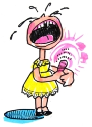
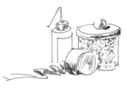
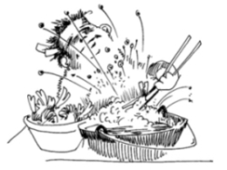

This page has usage examples for the following words:

adhesive tape, Band-Aid 絆創膏 ばんそうこう
a first-aid kit (box) 救急箱 きゅうきゅうばこ
a cut 切り傷 きりきず
a burn 火傷 やけど
(a pair of) scissors はさみ
an insect bite 虫刺され むしさされ
antidiarrhetic, binding medicine 下痢止め げりどめ
bandage 包帯 ほうたい
(cold or warm) compress シップ薬 シップやく
(give) first aid 応急手当てをする おうきゅうてあてをする
fever medicine, medicine to bring down a fever
解熱剤 げねつざい
household medicine 家庭常備薬 かてい じょうびやく
rubbing alcohol 消毒アルコール しょうどくアルコール
sprain 捻挫 ねんざ
thermometer 体温計 たいおんけい
tweezers ピンセット
I've got a bee sting on my finger.
指先を蜂に刺されました。
ゆびさきを はちにさされました。
It is red and swollen.
赤く腫れ上がってきました。
あかくはれあがってきました。
Sprinkle meat tenderizer over the bee sting.
ミート・テンダライザーを、蜂刺されの上にふりかけてください。
ミート・テンダライザーを、はちさされのうえに ふりかけてください。
I cut my finger with a knife while preparing a meal.
料理をしていて、包丁で指を切りました。
りょうりをしていて、ほうちょうで ゆびをきりました。
It's bleeding a lot.
血がたくさん出ています。
ちがたくさんでています。
Apply a Band-Aid tightly over the cut.
切り傷をバンドエイドできつめに当ててください。
きりきずを バンドエイドで きつめにあててください。
I spilled boiling water from a kettle and burned my foot.
やかんの熱湯が足にこぼれて、火傷をしました。
やかんのねっとうが あしにこぼれて、やけどをしました。
Apply cold running water or an ice pack right away.
すぐに冷水を流すか、アイスパックを当ててください。
すぐに れいすいをながすか、アイスパックをあててください。
I sprained my ankle on the staircase.
階段で足首を捻挫しました。
かいだんで あしくびをねんざしました。
Wrap the ankle tightly with an Ace Bandage.
足首を、エースバンデージ（伸縮性のある包帯）で、きっちりまきましょう。
あしくびを、エースバンデージ（しんしゅくせいのある ほうたい）で、きっちりまきましょう。

A conversation between a patient and a doctor about household medicine
Patient:
What kind of medications should I keep at home as pain medicines for sudden headache and toothache and to treat cuts, insect bites and burns?
不意に襲われる頭痛や歯痛の痛み止め薬、その他に切り傷、虫刺され、火傷などの手当てとして、基本的にどんな常備薬を揃えておくべきですか？
Doctor:
I assume that everybody has pain medicines. For small cuts, insect bites and burns, ointments that contain antibiotics will be the best. Aloe juice is also very effective. Aloe grows well in Hawaii, even in a pot. For bee stings, aloe and meat tenderizer are effective. Meat tenderizer is used for cooking meat, and can be used to treat jellyfish sting. A box of household medicine should also have a thermometer, bandage and Band-Aid in various sizes.
痛み止め薬はどなたもお持ちでしょう。ちょっとした切り傷、虫刺されや火傷には、抗生物質入りの軟膏でもあれば文句ありませんが、アロエという植物の汁も大変効果があります。ハワイだとどこでも育ちますから、鉢植えでもぜひ手元にあるといいですね。蜂刺されには、ミート・テンダライザー ( meat tenderizer ) も効きます。これは肉を料理する時に使うものですが、海で泳いでいてクラゲに刺された時にも使われます。家庭常備薬（救急箱）の中には、体温計、包帯や大小のバンドエイドも加えておきましょう。

My two cents 一言おせっかい
An ounce of prevention is worth a pound of cure.
ほんの少しの予備知識、準備が大事を防ぐことになります。
[ka02]
| © 1995-2013 NACOS International Institute. All Rights Reserved. |